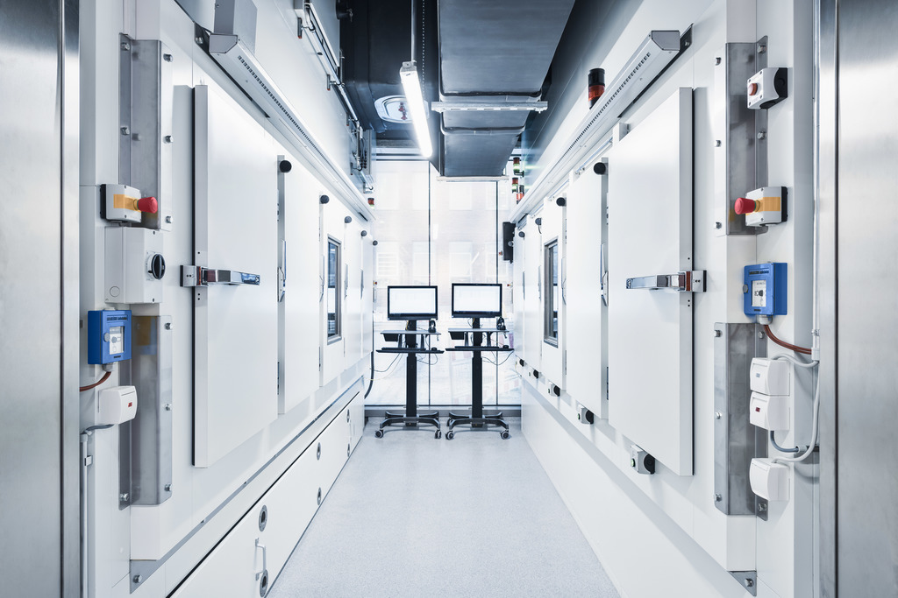
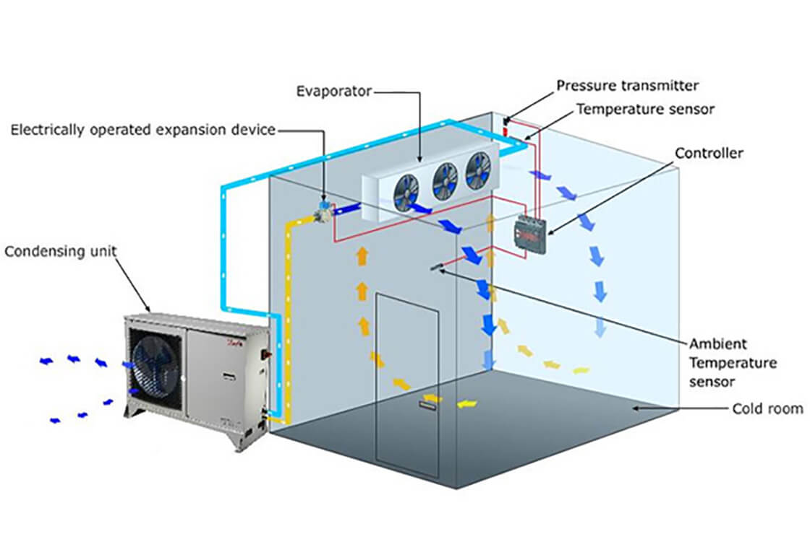
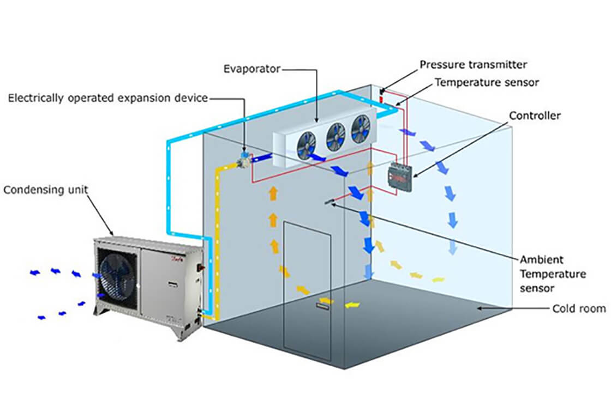

Temperature-Controlled Storage
 

1. State-of-the-art Technology: Our temperature-controlled storage solutions are equipped with cutting-edge technology, ensuring that the storage conditions are always optimal for preserving agricultural products like potatoes.
We integrate the latest systems to maintain accurate temperature settings. These systems ensure minimal fluctuation, which is critical for ensuring the quality of stored produce remains intact over time.
2. Long-Term Preservation: By maintaining a consistent temperature range, we ensure that the produce stays fresh for extended periods, which is crucial for businesses that require long-term storage without compromising on quality.
The ability to store agricultural products like potatoes for long periods allows businesses to manage supply and demand efficiently. Our facility ensures that quality and freshness are maintained until the product is needed in the market.
3. Preservation of Freshness: With our advanced systems, we offer an environment that helps in the preservation of freshness and quality control, which is essential for companies like Iscon Foods, ensuring their produce remains in perfect condition.
Our preservation system goes beyond just maintaining temperature. It regulates humidity and air circulation, ensuring that your produce stays fresh, maintains its texture, and does not spoil prematurely.
4. Temperature Monitoring: Our facilities come with automated monitoring systems that constantly track and regulate the temperature, providing 24/7 surveillance. This system ensures the quality of produce is never compromised and helps maintain an ideal storage environment.
The monitoring system continuously checks for any deviations from set temperature conditions and sends alerts if any adjustments are needed. This enables us to take immediate action if anything goes wrong, keeping your produce safe at all times.
5. Customizable Settings: We offer customizable temperature settings, allowing clients to store various types of agricultural products, each with its own specific storage requirements. This flexibility makes our temperature-controlled storage ideal for a wide range of produce.
Whether you're storing potatoes, fruits, or other perishable goods, we offer the flexibility to set temperatures specific to each product's needs, ensuring their longevity and freshness.
6. Ideal for Bulk Storage: Whether it’s for bulk potato storage or other agricultural products, our facility can handle large volumes while maintaining consistent and accurate temperature control throughout.
Our storage solutions are capable of housing large quantities of produce while ensuring that each batch receives the same level of care and attention. The consistency in temperature management is vital for preserving the integrity of bulk goods over extended periods.
{kind=link}